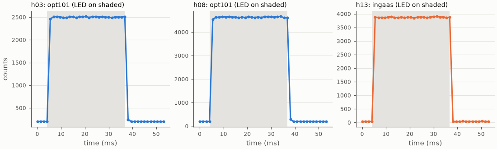

| Sample | none-empty-chamber | Operator | unknown |
|---|---|---|---|
| Firmware | 2.5.1 (proto 1, build 2026-11-16) | Config | a6884745c280 (thresholds provisional) |
| Host | macOS-27.0.1-x86_64-i386-64bit, Python 3.12.4 | Software | lio 0.2.0, git 8b1b33f855 (dirty) |
| Results | PASS 3 | ||
| LED duty | 0.0 s of cool-down waits; 0 over-budget on-time(s) | ||
| Test | Name | Status | Note |
|---|---|---|---|
| T07.1 | Step response and settling time | ✓ PASS | |
| T07.2 | Recommended settle time | ✓ PASS | |
| T07.3 | MEAS timing | ✓ PASS |

| Check | Status | Result | Criterion |
|---|---|---|---|
Hole 3 (opt101) step responseT07.1/h03 |
✓ PASS | settled within a few samples: t99 <= 2.04 ms (upper bound, limited by the sample interval) | time to 99 % recorded |
Hole 8 (opt101) step responseT07.1/h08 |
✓ PASS | settled within a few samples: t99 <= 2.04 ms (upper bound, limited by the sample interval) | time to 99 % recorded |
Hole 13 (ingaas) step responseT07.1/h13 |
✓ PASS | settled within one sample: t99 <= 0.68 ms (upper bound, limited by the sample interval) | time to 99 % recorded |
| Check | Status | Result | Criterion |
|---|---|---|---|
Configured settle_ms is long enoughT07.2/settle |
✓ PASS | recommended 4 ms (max 2.04 ms x 1.5), configured 8 ms | recommended <= 8 ms |
| Check | Status | Result | Criterion |
|---|---|---|---|
MEAS 3 8 1 on-timeT07.3/s8n1 |
✓ PASS | t_on_ms 24 | 21.3-32.0 ms and <= watchdog 2000 ms |
MEAS 3 20 4 on-timeT07.3/s20n4 |
✓ PASS | t_on_ms 84 | 73.1-106.9 ms and <= watchdog 2000 ms |